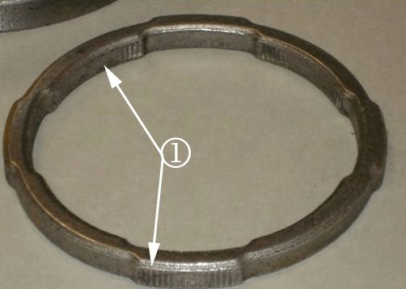
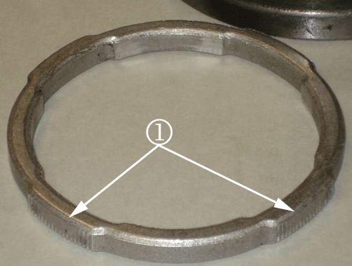

Drivetrain - Whine or Click Type Noises from Front Axle
TECHNICALBulletin No.: 09-04-19-001
Date: April 28, 2009
Subject: Whine or Click Type Noises from Front Axle/New Design Front Axle Side Bearing Adjusters (Inspect/Replace with New Lock Rings)
Models:
2002-2009 Cadillac Escalade, Escalade ESV, Escalade EXT
2002-2009 Chevrolet Avalanche, Silverado, Suburban, Tahoe
2002-2009 GMC Sierra, Yukon, Yukon XL
All Equipped with 8.25" Front Axle
Condition
Some customers may comment about whine or click type noises from the front axle. Upon further investigation, disassembly of the front differential may reveal chipped pinion or ring gear teeth.
Cause
This condition may be caused by an oversize front bearing side adjuster lock ring allowing the adjuster to move.
New Design Lock Adjusters Vs Old Design T-Lock Adjusters
Note
Front axle housings for old-style (Classic - GMT800) and new-style (GMT900) vehicles are not interchangeable.
The new design eliminates the side bearing adjusters movement. The lock adjusters are retained by a pressed in lock ring that maintains the adjuster setting for backlash and side bearing preload. All front axle housings for all model years will use the new design adjusters, and use the new lock ring.
The t-lock adjusters are still available, but if a housing replacement is needed, it is necessary to order the lock ring style housing, two of the new adjusters and two of the lock rings. Part numbers are available through the GM Parts catalog.
A newly designed 8.25" front axle is in production. The new design eliminates the t-lock side bearing adjusters. The new adjusters are retained by a pressed in lock ring that maintains the adjuster setting for backlash and side bearing preload. This design was phased into production during September, 2006. As a result, in the 2007 model year, both old-style (Classic - GMT800) and new-style (GMT900) vehicles built before the change have the t-lock design adjusters, and both types of vehicles built after the change have the lock ring design adjusters.
Correction
If no damage is visible and the concern was a whine or click noise, follow the inspect procedure in this bulletin and replace the lock ring. Complete assembly replacement is not necessary if an oversized slipping lock ring was found.
Important
The bearing adjuster lock rings are not reusable.

Inspect New Replacement Part Prior to Installation
Replace the side bearing adjuster lock ring and refer to SI for adjustment. When replacing the side bearing adjuster lock ring, inspect the old locking ring and make sure there are vertical lines in the outer and inner diameter of the ring (1). Next inspect and make sure there is tension when the locking rings are installed. If the locking ring rotates freely around the adjuster, do not use the locking ring. Replace with a new locking ring and make the same inspection.
Oversize Lock Rings-Do Not Use

The new lock rings will not have any vertical lines (inner or outer). They are imprinted during install. If vertical lines are shown (1), DO NOT USE.
Parts Information
Refer to GM Parts Catalog.
Warranty Information
For vehicles repaired under warranty, use the table above.

Disclaimer